RANI KI VAV
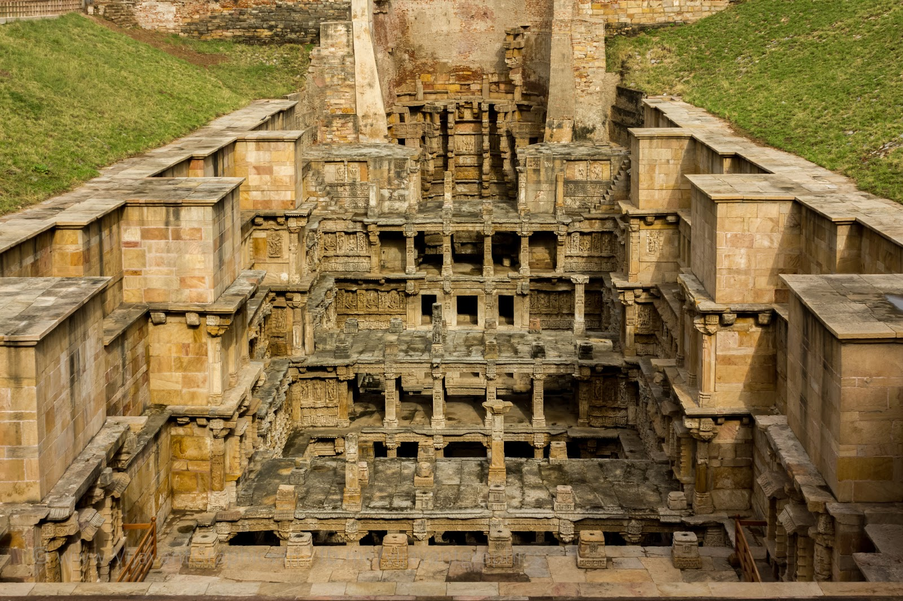You will feel like an ant climbing down an anthill when you explore the Rani ki Vav stepwell as it is a massive structure that is around 24 meters deep. One of the most unexplored historical places in India, this stepwell was built in the 11th century AD, as a memoriam for King Bhimdev of the Solanki dynasty by his wife Queen Udayamati. The lowest level of the stepwell was earlier used as a route to escape to neighbouring villages.
Rani ki vav is an intricately constructed stepwell situated in the town of Patan in Gujarat, India. It is located on the banks of Saraswati River. Rani ki vav was built as a memorial to an 11th-century AD king Bhimdev I . It was added to the list of UNESCO's World Heritage Sites on 22 June 2014. Stepwells are a distinctive form of subterranean water resource and storage systems on the Indian subcontinent, and have been constructed since the third millennium BC. Rani ki vav was built in the complex Maru-Gurjara architectural style with an inverted temple and seven levels of stairs and holds more than 500 principal sculptures.
Rani ki Vav bagged the title of “Cleanest Iconic Place” in India at the Indian Sanitation Conference (INDOSAN) 2016 in New Delhi in October 2016. The monument was felicitated at the conference, inaugurated by Prime Minister Narendra Modi.
History
Rani ki vav, or Ran-ki vav (Queen’s step well) was constructed during the rule of the Chaulukya dynasty. It is generally assumed that it was built in the memory of Bhima I (r. c. 1022–1064) by his widowed queen Udayamati and probably completed by Udayamati and Karna after his death. A reference to Udayamati building the monument is in Prabandha Chintamani, composed by the Jain monk Merunga Suri in 1304 AD.
The stepwell was later flooded by the nearby Saraswati River and silted over until the late 1980s. When it was excavated by the Archaeological Survey of India, the carvings were found in pristine condition.
Architecture
This magnificent east-facing step well measures approximately 64 m long, 20 m wide & 27 m deep. A stepped corridor compartmented at regular intervals pillared multistory pavilions is a unique feature. It was one of the largest and the most sumptuous structures of its type. It became silted up and much of it is not visible now, except for some rows of sculptured panels in the circular part of the well. Among its ruins one pillar still stands which is an excellent example of this period of design. A part only of the west well is extant from which it appears that the wall had been built of brick and faced with stone. From this wall project vertical brackets in pairs, which supported the different galleries of the well shaft proper. The bracketing is arranged in tiers and is richly carved. The minute and exquisite carving of this vav is one of the finest specimens of its kind. Befitting its name, the Rani-Ki-Vav is now considered to be the queen among step wells of India.
There is also a small gate below the last step of the step well, with a 30-kilometre tunnel, currently blocked by stones and mud) which leads to the town of Sidhpur near Patan. It was used as an escape gateway for the king, who built the step well in the times of defeat.
Ornate side walls
Most of the sculptures are in devotion to Vishnu, in the forms of Dus-Avatars Kalki, Rama, Krishna, Narsinh, Vaman, Varahi and others representing their return to the world. Nagkanya, Yogini beautiful women – Apsara showcasing 16 different styles of make-up to look more attractive called Solah-shringar.
Around 50–60 years back there were ayurvedic plants around this area, and the water accumulated in Rani ki vav was considered to be helpful for viral disease, fever etc.
The vavs of Gujarat are not merely sites for collecting water and socializing, but also hold great spiritual significance. Originally, the vavs of Gujarat were constructed quite simply, but became more intricate over the years, perhaps to make explicit the ancient concept of the sanctity of water with the addition of carved stone deities. Thus visitors enter Rani Ki Vav as if it is an inverted temple, where one steps down various levels to the water.
The steps begin at ground level, leading you down through the cool air through several pillared pavilions to reach the deep well below. There are more than 800 elaborate sculptures among seven galleries. The central theme is the Dasavataras, or ten incarnations of Vishnu, including Buddha. The avatars are accompanied by sadhus, Brahmins, and apsaras (celestial dancers), painting their lips and adorning themselves. At water level you come to a carving of Sheshashayi-Vishnu, in which Vishnu reclines on the thousand-hooded serpent Shesha, where it is said he rests in the infinity between ages.
Interesting fact: The central level has the theme “Dasavatars” which means 10 incarnations of Vishnu, and that when you approach the water level there will be a sculpture of Vishnu reclining on a thousand snake heads.
Entry fee: Indians- INR 5
Foreigners- INR 135
Open from: 8 am to 6 pm
Must see: The excellently carved sculptures of Yokinis, Apsaras and Nakakanyas in the seven galleries.
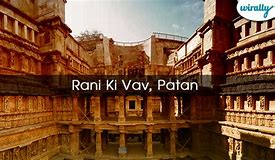
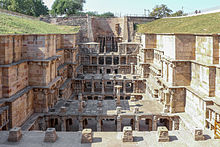
 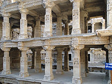
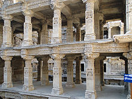
 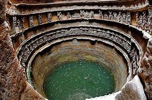
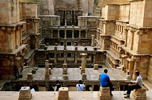
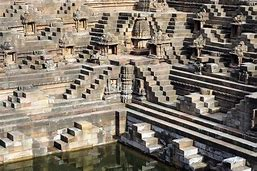
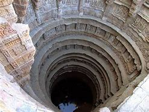
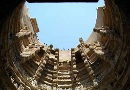
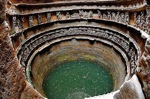
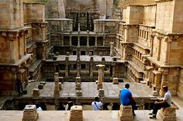
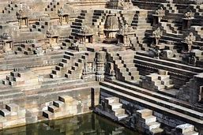
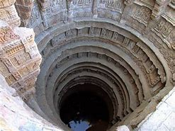
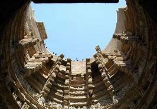
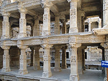
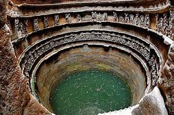
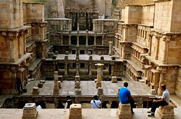
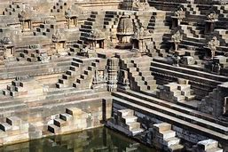
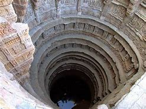
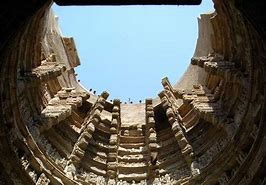
Developed By: Vineet Choudhary